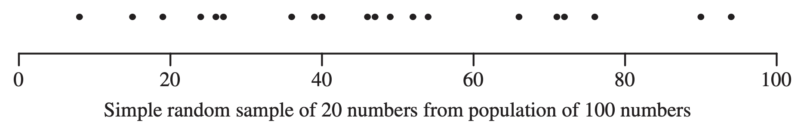

[1] 48 56 90 78 86 71 42Lecture 02a – Sampling designs I
ENVX2001 Applied Statistical Methods
Feb 2024
Sampling designs
Simple random sampling:
- Each unit has an equal chance of being selected.
- Randomly sample units from the entire population.

Stratified random sampling
- The population is first divided into strata (more on this later).
- Randomly sample units within each strata by simple random sampling, standardised by the inclusion probability (or weight) of each strata.

Confidence intervals

Soil carbon
Data story

Soil carbon content was measured at 7 locations across the area. The amount at each location was 48, 56, 90, 78, 86, 71, 42 tonnes per hectare (t/ha).
We start with the sampled data:
What is the mean soil carbon content and how confident are we in this estimate?
95 % Confidence interval
The formula
95\%\ CI = \bar y \pm t^{0.025}_{n-1} \times SE(\bar y)

Recall: CI = \text{estimate} \pm \text{margin of error}
So: 95\%\ CI = \text{sample mean} \pm \text{t-critical value} \times \text{standard error of the mean}
We need to calculate each of these components:
① Sample mean \bar y; ⓶ Critical value t^{0.025}_{n-1}; and ③ Standard error of the mean SE(\bar y)
Standard error of the mean
The variance of the mean, var(\bar y), is: var(\bar y) = \frac{var(y)}{n}
Variance is standard deviation squared (s^2), so the formula is: var(\bar y) = \frac{s^2(y)}{n}
Since SE = \frac{s}{\sqrt{n}}, then the standard error of the mean, SE(\bar y), is: SE(\bar y) = \frac{s(y)}{\sqrt{n}} = \frac{\sqrt{s^2(y)}}{\sqrt{n}} = \sqrt{var(\bar y)}

Thanks!
Questions?
This presentation is based on the SOLES Quarto reveal.js template and is licensed under a Creative Commons Attribution 4.0 International License